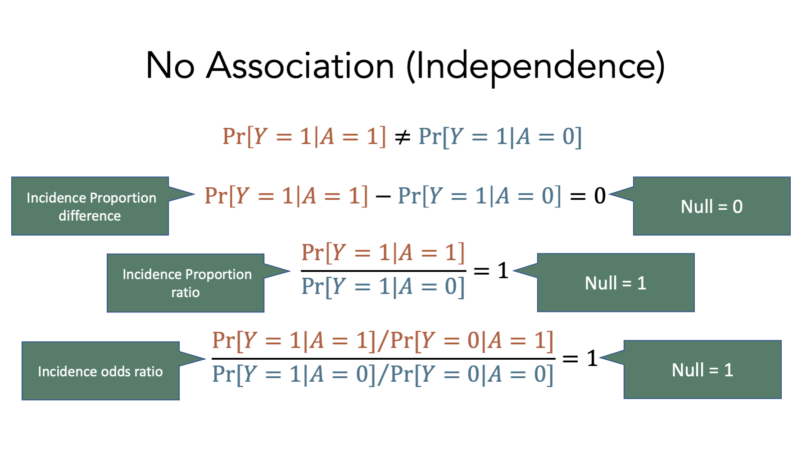
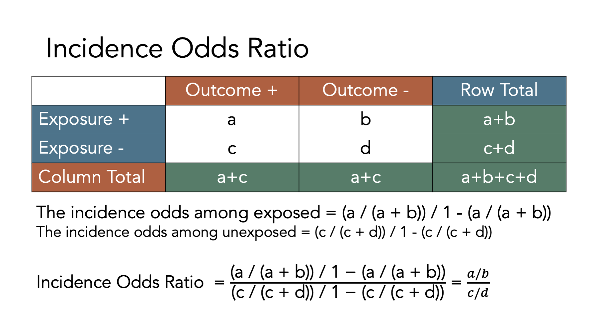

46 Measures of Association
This chapter is under heavy development and may still undergo significant changes.
As a reminder, we said that epidemiology is usually defined as something like, “the study of the occurrence and distribution of health-related states or events in specified populations, including the study of the determinants influencing such states, and the application of this knowledge to control the health problems”16 in the using R for epidemiology chapter. In the chapter about measures of occurrence, we focused on some of the ways we can measure the occurrence of those health-related states or events. In this chapter, we will start discussing ways we can measure the distribution of those health-related states or events. In other words, are those health-related states or events equally likely for everyone, or are they more for some people than others. However, we first need to review a couple of topics that will help us later in our discussion about measures of association.
🗒Side Note: Writing (and reading) “health-related states or events” over and over starts to get cumbersome after a while. Therefore, we will often just use “conditions” or “events” in the text below instead. Further, the methods we discuss below can just as easily be applied to better understanding characteristics of populations that would not typically be described as a “condition” or “event”. For example, sex assigned at birth or ethnicity.
46.1 Exposures and outcomes
Our discussion of associations will inevitably lead us to to compare two or more conditions in our population of interest. For example, we might want to compare diabetes and state of residence to better understand if diabetes is more common in some states than others. It is commonplace to refer to one of the conditions we are comparing as the outcome and the other condition(s) as the exposure(s). For example, we might refer to diabetes as the outcome and state of residence as the exposure. By extension, the members of the population who are living with the exposure(s) are commonly referred to as the exposed group, or simply the exposed.
In epidemiology, the terms exposure and outcome are used all of the time. Both terms can refer to pathogens, environmental conditions, behaviors, traits, social conditions, diseases or health conditions, and/or treatments or interventions. Table 46.1 below contains some examples.
| Term | Examples |
|---|---|
| Pathogens | Tapeworm, Malaria, Ringworm, Streptococcus, and HPV |
| Environmental condtions | Smoking, Physical Activity, Sleep, and Sexual behaviors |
| Behaviors | Genotype and Sex assigned at birth |
| Social conditions | Discrimination, Neighborhood characteristics, and Culture |
| Diseases or condtions | Diabetes, Heart disease, and Cancers |
| Treatments or interventions | Medications, Smoking cessation programs, and Laws and policies |
So, what distinguishes an exposure from an outcome? Generally speaking, we do. When we are exploring the relationship between two variables in our data, it is customary to call the first variable an exposure if we believe it is the cause of the second variable, and to call the second variable an outcome if we believe it is caused by the first variable. We haven’t formally defined causes and effects yet, and we won’t until the part of the book about causal inference, but our intuitive/colloquial understanding of cause and effect should be sufficient for now.
With that in mind, virtually any of the examples from table 46.1 could reasonably be thought of as an exposure or an outcome depending on the question we are trying to answer, and our beliefs about how causes and effects work in the world around us. For example, if we believe that unprotected sex is a cause of HPV infection, then we may want to measure the association between unprotected sex (an exposure) and HPV infection (an outcome). However, we could also believe that HPV infection is a cause of cervical cancer. In that case, we may want to measure the association between HPV infection (an exposure) and the existence of cervical cancer (an outcome). Notice that HPV infection is not inherently an exposure or an outcome. Rather, we labeled it as an exposure or an outcome based on the question we were asking and our beliefs about its relationship to the variable we were comparing it to.
The paragraph above may have left you with the impression that measuring associations is the same thing as measuring causes and effects. That is not the case! In fact, you may already be familiar with the popular saying “association does not equal causation” or “correlation does not equal causation.” These sayings are correct. There is virtually an infinite number of possible examples of statistical associations that have nothing to do with cause-and-effect relationships, which are commonly called spurious correlations. For some interesting real world examples, you can check out Tyler Vigen’s website devoted to spurious correlations. Even in cases were there isn’t necessarily a cause-and-effect relationship between two variables being studied, the terms exposure and outcome are still frequently used – albeit somewhat arbitrarily – in practice.
46.2 Contingency tables
Many of the concepts and measures that will will explore in this chapter (e.g., incidence proportion differences, incidence proportion ratios, etc.) are easier to understand when we relate them to contingency tables, which are a commonly used tool in epidemiology. Contingency tables are also frequently called 2x2 tables (spoken as “two by two tables”) or crosstabs.

The figure above shows the classic 2x2 contingency table. The “2x2” part is meant to indicate that the table has two rows of data values (not including the column headers) and two columns of data values (not including the row headers), which is the most common contingency table configuration used in epidemiology. However, we can technically construct contingency tables with as many rows and columns as we would like. In the classic 2x2 configuration, the first row of values corresponds to people who were exposed to our first condition of interest and the second row of values corresponds to people who were not exposed to our first condition of interest (i.e., unexposed). Similarly, the first column of values corresponds to people who had the outcome we are interested in and the second column of values corresponds to people who did not have the outcome we are interested in. It is important to note that we can theoretically reconfigure the rows and columns of our contingency table anyway we would like, but this configuration is the configuration that the formulas you will find in nearly every epidemiology textbook will assume you are using.
To illustrate how 2x2 contingency tables work, let’s return to our simulated data from the measures of occurrence chapter that included information from 10 people gathered over a 12-month period.

If we came along and did a study of this group of people in month 2, the prevalence of disease would equal the number of people with disease divided by the number of people in the sample. In this case, that would be 2 people (01 and 02) divided by 10. Now let’s add another dimension to this figure. Specifically, let’s say that persons 02, 04, 06, 08, and 10 were exposed to some exposure of interest (shaded purple in the figure below).
🗒Side Note: The R code below creates the plot representing our simulated population of interest. You do not need to use or understand this code to understand the measures of association that are discussed at the end of the chapter. This code included purely for readers who are curious about how we created the plot. If that isn’t you, please feel free to skip right over it.
# Simulate data for 10 hypothetical people
# From Lash TL, VanderWeel TJ, Haneuse S, Rothman KJ. Modern Epidemiology. fourth. Wolters Kluwer; 2021.
people <- 1:10
months <- -1:12
pop_10 <- expand_grid(person = people, month = months)
rows_per_person <- length(months)
# Count from the beginning of each month.
# So, person 2 is pre-follow-up at the beginning of time 1 (month -01), at risk
# at the beginning of time 2 (month 00), at risk at the beginning of time 3
# (month 01), diseased at the beginning of time 4 (month 02), etc.
p01 <- rep("Diseased", rows_per_person)
p02 <- c(rep("Pre-follow-up", 1), rep("At Risk", 2), rep("Diseased", 3), rep("Deceased", 8))
p03 <- c(rep("Pre-follow-up", 1), rep("At Risk", 4), rep("Diseased", 9), rep("Deceased", 0))
p04 <- c(rep("Pre-follow-up", 1), rep("At Risk", 5), rep("Diseased", 8), rep("Deceased", 0))
p05 <- c(rep("Pre-follow-up", 1), rep("At Risk", 7), rep("Diseased", 6), rep("Deceased", 0))
p06 <- c(rep("Pre-follow-up", 1), rep("At Risk", 8), rep("Diseased", 3), rep("Deceased", 2))
p07 <- c(rep("Pre-follow-up", 1), rep("At Risk", 9), rep("Diseased", 0), rep("Deceased", 4))
p08 <- c(rep("Pre-follow-up", 1), rep("At Risk", 5), rep("Diseased", 0), rep("Deceased", 8))
p09 <- c(rep("Pre-follow-up", 1), rep("At Risk", 13), rep("Diseased", 0), rep("Deceased", 0))
p10 <- c(rep("Pre-follow-up", 1), rep("At Risk", 13), rep("Diseased", 0), rep("Deceased", 0))
status <- c(p01, p02, p03, p04, p05, p06, p07, p08, p09, p10)
# Add status to pop_10
pop_10$status <- status
# Create factor versions of person and status
pop_10 <- pop_10 |>
mutate(
person_f = factor(person, labels = c(paste0(0, 1:9), "10")),
status_f = factor(status, levels = c("Pre-follow-up", "At Risk", "Diseased", "Deceased"))
)
# Add exposure status
pop_10_exposed <- pop_10 |>
mutate(
exposed = if_else(person %% 2 == 0, 1, 0),
exposed_f = factor(exposed, 0:1, c("No", "Yes"))
)
# Add coordinates for line segments in the plot
pop_10_exposed_wide <- pop_10_exposed |>
group_by(person_f, status_f) |>
mutate(
x = min(month),
xend = max(month)
) |>
ungroup() |>
# Keep distinct values only
distinct(person, status, .keep_all = TRUE) |>
# Make the line ends touch
group_by(person) |>
mutate(
xend_adjusted = lead(x),
xend_adjusted = if_else(is.na(xend_adjusted), xend, xend_adjusted)
) |>
relocate(xend_adjusted, .after = xend) |>
ungroup()# To color the facet strip panels
stip_colors <- pop_10_exposed_wide |>
# Keep one row for each person
distinct(person, .keep_all = TRUE) |>
# Add color to use by exposed status
mutate(color = if_else(exposed == 1, "#817190", "#D9D9D9")) |>
pull(color)
strips <- ggh4x::strip_themed(background_y = ggh4x::elem_list_rect(fill = stip_colors))
pop_10_exposed_plot <- ggplot(pop_10_exposed_wide) +
geom_segment(aes(x = x, xend = xend_adjusted, y = 1, yend = 1, color = status_f), size = 5) +
# Show all months
scale_x_continuous("Month Follow-up", breaks = -1:12) +
ggh4x::facet_wrap2(vars(person_f), nrow = 10, strip.position = "left", strip = strips) +
# Add a line marking the start of follow up
geom_vline(xintercept = 0, color = "blue") +
# Add vertical lines to mark the start of each month
geom_vline(xintercept = 1:12, color = "#f9f9f9") +
# Change fill colors
scale_color_manual("Status", values = c("gray", "orange", "red", "black", "#4682B4")) +
# Change y-axis label
ylab("Person") +
theme(
# Remove gray background
panel.background = element_blank(),
# Remove the "p" from the x axis
axis.text.y = element_blank(),
axis.ticks.y = element_blank(),
# Move legend
legend.position = "bottom",
# Change the color and style of the "months" axis
axis.line.x = element_line(
color = "blue", arrow = grid::arrow(length = unit(0.1, "inches"), type = "closed")
),
# Rotate the facet label to the right
strip.text.y.left = element_text(angle = 0)
)
Under these conditions, how would we complete a 2x2 contingency table about this population?

Let’s fill it in together, starting at the top-left corner.
- Cell
acorresponds to people who were exposed and had the disease. Person 02, person 04, and person 06 were in the exposed group and had disease. - Cell
bcorresponds to people who were exposed and did not have the disease. Person 08 and person 10 were in the exposed group and did not have disease. - Cell
ccorresponds to people who were not exposed and had the disease. Person 01, person 03, and person 05 were not in the exposed group and had disease. - Cell
dcorresponds to people who were not exposed and did not have the disease. Person 07 and person 09 were not in the exposed group and did not have disease.

To calculate many of the measures we will discuss below, we will also need to fill in the marginal totals – the row, column, and overall totals located on the margins of the table. Once we fill in the contingency table, we can easily calculate many measures of interest in epidemiology.

For example, in the figure below we add the simulated population’s values back the contingency table and calculate the total for the first row. There were 5 people who were exposed and developed disease, and there were two people who were exposed and did not develop disease. Therefore, the total number of people who were exposed is 3 + 2 = 5.

Before moving on, try to fill out the rest of the contingency table in your head. The answers are shown in the figure below.

Now that we have developed an intuition for what contingency tables are and how to fill them in, let’s learn how to create them in R.
46.3 Building contingency tables in R
There are many different possible ways to create contingency tables in R. We prefer building them as a matrix object. We haven’t talked much about matrix objects up the this point, and for the most part, we don’t need to use them very often. However, they do provide a convenient structure for replicating contingency tables in R.
# Load the packages needed for the code below.
library(dplyr, warn.conflicts = FALSE)
library(freqtables)46.3.1 Matrix dimensions
In R, a matrix is a vector with 2 dimensions. What does that mean? Perhaps it’s best to learn what it means with through the use of an example. Here is a character vector:
## [1] "a" "b" "c" "d"If we want to select element a, we can use bracket notation. The first element in the character vector, v, is a. So, we can select it with the code v[1], which means, “return the first element of v”.
## [1] "a"Next, let’s create a matrix with character values. Remember, all elements of a vector must be of the same type (character, numeric, etc.), and a matrix is a special type of vector. So, all elements of a matrix must be of the same type. Below we will create a matrix object using almost the exact same code we used above. The only difference is that we pass the code used to create our character vector, c("a", "b", "c", "d"), to the matrix() function.
# Create a matrix object called mat
mat <- matrix(c("a", "b", "c", "d"))
# Print the value stored in mat to the screen
mat## [,1]
## [1,] "a"
## [2,] "b"
## [3,] "c"
## [4,] "d"Notice that this matrix has 4 rows and 1 column by default. This time, we need to add both coordinates (dimensions) to our bracket notation if we want to select the “a” element. We do so by typing the matrix name followed by square brackets that contain the row we want, a comma, and the column we want. So, matrix_name[row, column].
# Print the value stored in the first row and first column of mat to the screen
# Note. In this case, mat[1] would return the same result, but that won't be
# true when we have more complex matrices
mat[1, 1]## [1] "a"46.3.2 Matrix to contingency tables
Now, to make our matrix look and behave like a contingency table, we need our matrix to have 2 rows and 2 columns instead of 4 rows and 1 column. To make that happen, we will first adjust either the ncol or nrow argument to the matrix() function.
# Create a matrix object called matrix_ct that has 2 columns instead of 1
matrix_ct <- matrix(
c("a", "b", "c", "d"), # Enter values in this order
ncol = 2
)
# Print the value stored in matrix_ct to the screen
matrix_ct## [,1] [,2]
## [1,] "a" "c"
## [2,] "b" "d"Or…
# Create a matrix object called matrix_ct that has 2 rows instead of 4
matrix_ct <- matrix(
c("a", "b", "c", "d"), # Enter values in this order
nrow = 2
)
# Print the value stored in matrix_ct to the screen
matrix_ct## [,1] [,2]
## [1,] "a" "c"
## [2,] "b" "d"Unfortunately, neither of the solutions above get us exactly the result we are looking for. Can you spot what’s wrong with them?
Remember, we said above that the order of the cells in our contingency tables matters. The formulas we will find in nearly every epidemiology textbook will assume that our contingency tables are configured with a and b in the first row and c and d in the second row. However, the matrix above is configured such that a and c are in the first row and b and d are in the second row. That’s because, the byrow argument to the matrix() function is set to FALSE by default. This means that R will fill in the matrix values starting at location [1, 1] and filling down columns. We want R to fill in the matrix values starting at location [1, 1] and filling across rows. We do that by changing the default byrow = FALSE to byrow = TRUE.
# Create a matrix object called matrix_ct that has 2 rows instead of 4
matrix_ct <- matrix(
c("a", "b", "c", "d"), # Enter values in this order
nrow = 2,
byrow = TRUE
)
# Print the value stored in matrix_ct to the screen
matrix_ct## [,1] [,2]
## [1,] "a" "b"
## [2,] "c" "d"Now, we have a matrix object that looks and behaves like a standard 2x2 contingency table.
46.3.3 Add row and column names
To make our matrix even easier to read and work with, let’s go ahead and add row and column labels. We do so using the dimnames() function. The dimnames() function is a little bit different than most of the functions we have used so far in that we can use it to get or set values. Meaning, if we only pass an R object (i.e., vector, data frame, or matrix) to the dimnames() function, then it will get – or return – the object’s dimension labels to us. Alternatively, we can also use the dimnames() function to set or assign labels to the object’s dimensions. Let’s learn how to get and set labels below.
Above, we said that our matrix has a row dimension and column dimension. So, passing our matrix to the dimnames() function below will return the labels assigned to the rows and columns of the matrix.
## NULLOf course, we haven’t set the labels of the rows and columns of matrix_ct, so R simply returns a NULL value (i.e., the lack of a value). Luckily, we can easily set the dimension labels with the dimnames() function as well.
Before attempting to set our dimension labels, however, let’s first take a look at how many dimensions the matrix_ct object contains.
## [1] 2 2It probably isn’t immediately obvious, but R is telling us that matrix_ct has 2 rows (the first number) and 2 columns (the second number) in the result above. This should make sense if we take another look at matrix_ct.
## [,1] [,2]
## [1,] "a" "b"
## [2,] "c" "d"We can see above that matrix_ct has 2 rows ([1,] and [2,]) and 2 columns ([,1] and [,2]). How should we label them? Well, remember that the value "a" corresponds to people who were exposed and had the outcome. So, we could reasonably label [1,] as Yes (i.e., exposed) and [,1] as Yes (i.e., had the outcome). Using the same logic, we could also reasonably label [2,] as No (i.e., unexposed) and [,2] as No (i.e., did not have the outcome).To do so, we create a list that contains the row and column labels, and then assign them to matrix_ct.
We create a list object in R with the list() function. We first pass a vector of values we want to assign to the rows of our contingency table to our list, and then pass a vector of values we want to assign to the columns of our contingency table to our list.
# Create a list object called my_dimnames that contains labels we want to
# assign to the rows and columns of our contingency table
my_dimnames <- list(
c("Yes", "No"), # Row names
c("Yes", "No") # Then column names
)
# Print the value stored in my_dimnames to the screen
my_dimnames## [[1]]
## [1] "Yes" "No"
##
## [[2]]
## [1] "Yes" "No"We can then set or assign that list of labels to matrix_ct like this:
# Assign the values stored in my_dimnames as the row and column labels of matrix_ct
dimnames(matrix_ct) <- my_dimnames
# Print the value stored in matrix_ct to the screen
matrix_ct## Yes No
## Yes "a" "b"
## No "c" "d"That makes our contingency table a little easier for us to read and work with. However, there could still be some ambiguity as to what each Yes and each No correspond to. We can improve the labels by passing a named vector to the my_dimnames list like this:
# Create a list object called my_dimnames that contains labels we want to
# assign to the rows and columns of our contingency table
my_dimnames <- list(
Exposure = c("Yes", "No"), # Row names
Outcome = c("Yes", "No") # Then column names
)
# Print the value stored in my_dimnames to the screen
my_dimnames## $Exposure
## [1] "Yes" "No"
##
## $Outcome
## [1] "Yes" "No"We can once again set or assign the values stored in my_dimnames as row and column labels in matrix_ct.
# Assign the values stored in my_dimnames as the row and column labels of matrix_ct
dimnames(matrix_ct) <- my_dimnames
# Print the value stored in matrix_ct to the screen
matrix_ct## Outcome
## Exposure Yes No
## Yes "a" "b"
## No "c" "d"See how the labels make our contingency table easier to read? Finally, we can put all the steps above together into one code chunk like this:
# Assign row and column labels to matrix_ct
dimnames(matrix_ct) <- list(
Exposure = c("Yes", "No"), # Row names
Outcome = c("Yes", "No") # Then column names
)
# Print the value stored in matrix_ct to the screen
matrix_ct## Outcome
## Exposure Yes No
## Yes "a" "b"
## No "c" "d"46.3.4 Add margins
Finally, let’s add marginal totals to our contingency table. Because we can’t add letters together, let’s use the numbers from the simulated population of people.
# Create a contingency table called matrix_ct
matrix_ct <- matrix(
c(a = 3, b = 2, c = 3, d = 2),
ncol = 2,
byrow = TRUE
)
# Assign row and column labels to matrix_ct
dimnames(matrix_ct) <- list(
Exposure = c("Yes", "No"), # Row names
Outcome = c("Yes", "No") # Then column names
)
# Print the value stored in matrix_ct to the screen
matrix_ct## Outcome
## Exposure Yes No
## Yes 3 2
## No 3 2Next, let’s add the marginal totals to matrix_ct. The easiest way to do so is by passing our contingency table to the addmargins() function.
# Create a contingency table called matrix_ct_margins
# It is the matrix_ct with marginal totals added.
matrix_ct_margins <- addmargins(matrix_ct)
# Print the value stored in matrix_ct_margins to the screen
matrix_ct_margins## Outcome
## Exposure Yes No Sum
## Yes 3 2 5
## No 3 2 5
## Sum 6 4 10And now we have a contingency table, stored as an R object, that we can use to calculate many measures of association we are interested in. But before doing so, we need to quickly review one additional concept – probability.
46.4 Probabilities
As previously mentioned, statistics and statistical inference are critical tools in the practice of epidemiology, and probability theory is provides a foundation for statistics. Therefore, it is important for us to have a least a basic understanding of probability theory. Unfortunately, a complete review of probability theory is beyond the scope of this book. However, we will discuss a few of the most fundamental aspects of probability theory here and elsewhere in the book.
When we talk about the probability of an event in everyday speech, we are typically making a statement about how likely it is that the event has already occurred, or how likely it is that it will occur at some point in the future. For example, we may say that there is a 90% chance that a person has a certain disease, or that there is a 50-50 chance of surviving a particular condition, or that 9 out of 10 people who drop out of our study are experiencing adverse outcomes. As these examples illustrate, we can talk about probabilities in a number of different ways. However, it is mathematically easiest to work with probabilities that are recorded as fractions, which are then converted to decimals. So, we will typically write probabilities as a number between 0 and 1, where the more likely an event is to occur, the closer the probability is to 1. and the less likely an event is to occur, the closer the probability is to 0.
Additionally, it will be useful for us to distinguish between at least two conceptually different categories of probability.
Frequency probability is the limit of the relative frequency of an event in a sequence of N random trials as N approaches infinity.16 For example, if we flip a coin a really large number of times – a nearly infinite number of times – then how frequently does the coin come up heads? The proportion of heads (or tails) would constitute a frequency probability. Spoiler alert: It’s approximately 50%. Central to the concept of frequency probability is the idea that a process is repeated a large number of times. Further, frequency probabilities may or may not have anything to do with the beliefs that humans have about how likely an event is to occur (at least in theory). Rather, frequency probabilities are simply the result of counting the occurrence of something a large number of times (at least in theory). This is the conceptualization of probability that plays a central role in the majority of the statistical tool and procedures we use in epidemiology.
Subjective probability is a measure, ranging from 0 to 1, of the degree of belief about the occurrence of an event.16 For example, if we say there is a 50% probability of rain today, then we are making a subjective probability statement. We believe that it is just as likely to rain today as not. This statement can clearly not be a frequency probability. There is no way for us to repeat today a near infinite number of times and then count how times it rained. Today only occurs 1 time. Although this conceptualization of probability is widely considered less objective than frequency probabilities, it is probably the conceptualization that is most often implied when we humans discuss the probability of events in everyday conversation.
The gap between the frequency probabilities at the center of many, if not most, epidemiologic methods and the subject probabilities we express colloquially is the source of a great deal of confusion for many people. In this book, when we use the word “probability,” we are generally referring to frequency probabilities. Further, we will attempt to explicitly state when we are using the word “probability” in the more subjective sense.
46.4.1 Frequency probabilities
Let’s start with an example. The approximate frequency of Alzheimer’s Disease among Americans age 65+, by age group, is given in table 46.2. For instructional purposes, we will assume that having Alzheimer’s Disease (AD+) and not having Alzheimer’s Disease (AD-) are mutually exclusive (i.e., a person can’t be in both categories at the same time) and exhaustive (i.e., there aren’t other possible categories) categories. Further, we will assume that all people in this population are equally likely to be selected if we draw a sample.
| Age Group | Alzheimer’s Disease | No Alzheimer’s Disease | Total |
|---|---|---|---|
| 65-74 | 1.7 | 32.0 | 33.7 |
| 75-84 | 2.1 | 14.1 | 16.2 |
| 85+ | 2.0 | 4.0 | 6.0 |
| Total | 5.8 | 50.1 | 55.9 |
| a all values in millions |
We can define the probability of having Alzheimer’s Disease in our population of interest as:
\[P(AD)=\frac{Number\, of\, people\, with\, AD}{Total\, number\, of\, people\, in\, the\, population}\]
In this case, the probability of Alzheimer’s Disease among American’s age 65+ is:
\[P(AD) = \frac{5.8}{55.9} = 0.1\]
Equivalently, we can say that the marginal probability (because one of the marginal totals from the table was used as the numerator) of Alzheimer’s Disease among American’s age 65+ is 0.1.
More generally, we can say that if some process is repeated a large number of times, \(n\), and if some resulting event with the characteristic \(Y\) occurs, \(m\) times, the relative frequency of occurrence of \(Y\), \(\frac{m}{n}\) will be approximately equal to the probability of \(Y\).20
\[P(Y)=\frac{m}{n}\]
🗒Side Note: Notice that probability is sometimes written at \(Pr()\) and sometimes written as just \(P()\).
46.4.2 Conditional probabilities
The probabilities described above were all marginal or unconditional probabilities. Unconditional probabilities describe how likely an event occurrence is without incorporating information about other events that may affect the first event. For example, the unconditional probability of rain would be the probability of rain before knowing if there are clouds in the sky. Conversely, the conditional probability of an event describes how likely an event occurrence is given that some other event has already occurred. Going back to our rain example, the probability of rain would likely change if there were dark clouds looming in the sky. The probability of rain given that (i.e., conditional on) there are dark clouds in the sky is an example of a conditional probability.
An equivalent, but slightly different way to think conditional probabilities is as calculating a probability after filtering our data, or on a subset of our data. For example, we may to calculate the probability of Alzheimer’s Disease given that the randomly sampled person from our population of interest was in the 75-84 age group. This is a conditional probability and can be written as \(P(AD = 1|Age\, group = 75-84)\). The vertical bar means “given”. So, we can express this equation in words as “The probability of Alzheimer’s Disease given that age group is 75 to 84.” Because the 75-84 age group is our new popuation of interest – and consequently our new denominator – we can filter our table to include the 75-84 age group only. The other rows of data are irrelevant.
| Age Group | Alzheimer’s Disease | No Alzheimer’s Disease | Total |
|---|---|---|---|
| 65-74 | 1.7 | 32.0 | 33.7 |
| 75-84 | 2.1 | 14.1 | 16.2 |
| 85+ | 2.0 | 4.0 | 6.0 |
| Total | 5.8 | 50.1 | 55.9 |
| a all values in millions |
Now, we can calculate our conditional probability of interest as:
\[P(AD)=\frac{Number\, of\, people\, with\, AD}{Total\, number\, of\, people\, in\, the\, population\, age\, 75\, to\, 84}\]
In this case, the probability of Alzheimer’s Disease among American’s age 65+, given that a person is between the ages of 75 and 84, is:
\[P(AD = 1|Age\, group = 75-84) = \frac{2.1}{16.2} = 0.13\]
Before we can give a more general definition of conditional probabilities, we need to first introduce one additional concept – joint probabilities. A joint probability is the probability that two conditions exist at the same time. For example, what is the probability that a person picked at random from our population of interest will be in the 75 to 84 age group AND have Alzheimer’s Disease?
The probability that a person picked at random from our population of interest will be in the 75 to 84 age group and have Alzheimer’s Disease can be written symbolically as:
\[P(Age\, group = 75-84\, \cap AD = 1)\]
The new symbol, \(\cap\), in the equation above is read as “intersects” and means “and”. If we take look at table 46.4, we can see that the numerator for out calculation will be 2.1 million. Because we asked about the probability of selection from our population of interest, the denominator will be 55.9 million – the total size of our population.
| Age Group | Alzheimer’s Disease | No Alzheimer’s Disease | Total |
|---|---|---|---|
| 65-74 | 1.7 | 32.0 | 33.7 |
| 75-84 | 2.1 | 14.1 | 16.2 |
| 85+ | 2.0 | 4.0 | 6.0 |
| Total | 5.8 | 50.1 | 55.9 |
| a all values in millions |
Therefore, the joint probability that a person picked at random from our population of interest will be in the 75 to 84 age group and have Alzheimer’s Disease is:
\[P(Age\, group = 75-84\, \cap AD = 1) = \frac{2.1}{55.9} = 0.04\]
Now, that we know what joint probabilities are, we can more formally define conditional probabilities. That is, the conditional probability of \(Y\) given \(X\) is equal to the probability of \(Y \cap X\) divided by the probability of \(X\), provided that the probability of \(X\) is not zero.20
\[P(Y|X)=\frac{P(Y \cap X)}{P(X)}\]
If the equation above doesn’t mean much to you, don’t worry. Just remember that a probability quantifies the how often we expect something to occur in a single number that ranges between 0 and 1. A conditional probability is probability we assign to that event when we already know something else has occurred. Both of these terms will come up often in the chapters that follow.
46.5 Associations
We are almost ready to learn how to calculate measures of association. But first, let’s quickly review what an association is (and is not).
“[An association is a] statistical dependence between two or more events, characteristics, or other variables. An association is present if the probability of occurrence of an event or characteristic, or the quantity of a variable, varies with the occurrence of one or more other events, the presence of one or more other characteristics, or the quantity of one or more other variables.”16
Said another way, when the distribution (e.g., middle, spread, shape, proportion of people) of one variable is different, on average, across levels of a second variable, then there is an association between the first variable and the second variable. Yet another way to describe an association is to simply say that there is an association between two variables when knowing the value of variable one tells us something about (or helps us predict) the value of variable two.
Let’s simulate some data to help us understand what association looks like in action.
# Create a simulated data frame with two variables
df <- tibble(
# Create one variable, x, that has 50 rows with a value of 0 and 50 rows with
# a value of 1.
x = c(rep(0, 50), rep(1, 50)),
# Create a second variable, y, that has 100 values of either 0 or 1.
# If x equals 0, then y have 25 rows with a value of 0 and 25 rows with a
# value of 1.
# If x equals 1, then y have 25 rows with a value of 0 and 25 rows with a
# value of 1.
y = c(rep(0, 25), rep(1, 25), rep(0, 25), rep(1, 25))
)Now, let’s explore the relationship between x and y in the data we simulated above. Specifically, let’s ask R to calculate the distribution of y across levels of x. Here, “the distribution of y” means the proportion of 0’s and 1’s, and “across levels of x” means do the calculation for all rows where x equals 0 and separately for all rows where x equals 1.
df |>
# Use the freq_table function to calculate the distribution of y across
# levels of x
freq_table(x, y) |>
# Keep a subset of the columns to make the results easier to read.
select(row_var:col_cat, percent_row)## # A tibble: 4 × 5
## row_var row_cat col_var col_cat percent_row
## <chr> <chr> <chr> <chr> <dbl>
## 1 x 0 y 0 50
## 2 x 0 y 1 50
## 3 x 1 y 0 50
## 4 x 1 y 1 50In the results above, we can see that when x is 0 (row_cat = 0), then y is 1 (col_cat = 1) 50% of the time. Similarly, when x is 1 (row_cat = 1), then y is 1 (col_cat = 1) 50% of the time.
In this case, does the distribution of y differ across levels of x?
No. When x is 0, y equals 1 50% of the time, and when x is 1, y equals 1 50% of the time.
In this case, does knowing the value of x tell us something about (or help us predict) the value y.
No. The value of y is equally likely to be 1 or 0 no matter what the value of x is.
So, is there an association between x and y in the simulated data above?
No, there is no association between x and y in the simulated data above. Said another way, x and y and statistically independent of each other.
Now, let’s simulate a second data frame where x and y are associated with each other.
# Set the seed for the random number generator so that we can reproduce our results
set.seed(123)
# Create a simulated data frame with two variables
df <- tibble(
# Create one variable, x, that has 100 values of either 0 or 1.
# The probability of a value being 0 over the long run is 0.5 and the
# probability of a value being 1 over the long run is 0.5
x = sample(0:1, 100, TRUE, c(0.5, 0.5)),
# Create a second variable, y, that has 100 values of either 0 or 1.
# If x equals 0, then the probability of the y value being 0 over the long run is
# 0.2 and the probability of the y value being 1 over the long run is 0.8.
# If x equals 0, then the probability of the y value being 0 over the long run is
# 0.5 and the probability of the y value being 1 over the long run is 0.5.
y = if_else(
x == 0,
sample(0:1, 100, TRUE, c(0.2, 0.8)),
sample(0:1, 100, TRUE, c(0.5, 0.5))
)
)And let’s once again explore the relationship between x and y in the data we simulated above.
df |>
# Use the freq_table function to calculate the distribution of y across
# levels of x
freq_table(x, y) |>
# Keep a subset of the columns to make the results easier to read.
select(row_var:col_cat, percent_row)## # A tibble: 4 × 5
## row_var row_cat col_var col_cat percent_row
## <chr> <chr> <chr> <chr> <dbl>
## 1 x 0 y 0 19.1
## 2 x 0 y 1 80.9
## 3 x 1 y 0 52.8
## 4 x 1 y 1 47.2In the results above, we can see that when x is 0 (row_cat = 0), then y is 1 (col_cat = 1) 81% of the time. Alternatively, when x is 1 (row_cat = 1), then y is 1 (col_cat = 1) 47% of the time.
In this case, does the distribution of y differ across levels of x?
Yes! When x is 0, y equals 1 81% of the time, and when x is 1, y equals 1 only 47% of the time.
In this case, does knowing the value of x tell us something about (or help us predict) the value y.
Yes! The value of y is more likely to be 1 when x is 0 than when x is 1.
So, is there an association between x and y in the simulated data above?
Yes! There is an association between x and y in the simulated data above. We can also say that there is a statistical dependence between x and y.
At this point, we hope you are starting to develop an intuitive understanding of associations. Let’s try to simplify and formalize our definition of an association even further by writing it as an equation.
\[\begin{equation} Pr[Y=1|X=1] \neq Pr[Y=1|X=0] \tag{46.1} \end{equation}\]
Now, let’s break equation (46.1) down into its component parts and see what it tells us.
\(Pr[]\) is read as “the probability of”. The probability of is also frequently just written as \(P()\).
\(Y=1\) is read as “Y equals 1.” Typically, \(Y\) equals 1 when the thing that \(Y\) represents happens. For example, if \(Y\) represents Alzheimer’s Disease, then \(Y=1\) for each person who has Alzheimer’s Disease and \(Y=0\) for each person who does not have Alzheimer’s Disease.
\(X=1\) is read as “X equals 1.” Typically, \(X\) equals 1 when the thing that \(X\) represents happens. For example, if \(X\) represents APOEe4 allele, then \(X=1\) for each person who has an APOEe4 allele and \(X=0\) for each person who does not have an APOEe4 allele.
\(|\) is read as “given that” or “if”. For example, the probability that a person has Alzheimer’s Disease, \(Y=1\) if we know that they have an APOEe4 allele, \(X=1\).
So, how would we put all of this together and say (46.1) in words? Give it a try in your head before reading on.
The probability that \(Y\) equals 1 given that \(X\) equals 1 is not equal to the probability that \(Y\) equals 1 given that \(X\) equals 0.
Or, if we’re still talking about Alzheimer’s Disease and APOEe4 allele: The probability of Alzheimer’s Disease among people who carry at least one APOEe4 allele is not equal to the probability of Alzheimer’s Disease among people who do not carry any APOEe4 alleles.
And that is all there is to it. The distribution (e.g., middle, spread, shape, proportion of people) of one variable is different, on average, across levels of a second variable. Notice that this is an inherently numerical concept. Associations are simply a measure of the equivalence, or lack of equivalence, between two values. They give us no information about why that equivalence does or does not exist. Therefore, when an association is present, people sometimes say that there is a statistical dependence between the variables.
46.5.1 Statistical independence and null values
When trying to understand what something is, it can sometimes be helpful to understand what it is not. In this case, the opposite of an association is statistical independence.

These equations represent the lack of an association on the incidence proportion difference, incidence proportion ratio, and incidence odds ratio scales respectively. Notice the values of each when there is no association – 0 for the incidence proportion difference, 1 for the incidence proportion ratio, and 1 for the incidence odds ratio. These values are called null values, and they play an important role in the measures of association we will learn to calculate soon.
46.6 Calculating measures of association in R
Now that we understand exposures and outcomes, contingency tables, probabilities, and associations, it’s finally time to start calculating some of the most common measures of association used in epidemiology.
46.6.1 Incidence proportion ratios
Remember that the incidence proportion is the proportion of the population who experiences a new occurrence of the condition of interest among those in the population who are at risk of experiencing a new occurrence the condition of interest during a given time frame.
If we take a look at the simulated population data above, we can calculate the incidence proportion to be:
\[\frac{5}{9}=0.56\]
When we have two groups (e.g., exposed and unexposed), one way we can contrast outcomes in those groups is by calculating the ratio of the incidence proportion in the exposed to the incidence proportion in the unexposed.
\[\frac{Incidence\, proportion\, in\, the\, exposed}{Incidence\, proportion\, in\, the\, unexposed}\]
This ratio of incidence proportions is called the incidence proportion ratio. It is also commonly called the relative risk or risk ratio. We like using the term incidence proportion ratio because it is unambiguous and consistent with the previous terminology we have been using.

Figure 46.1: Calculating incidence proportion ratios
Calculating an incidence proportion ratio from a contingency table is relatively straightforward. The figure above shows the equations we need to use to do so. It’s even easier when we can ask R to do the calculations for us. Next, let’s plug the data from our simulated population into a contingency table in R and calculate the incidence proportion ratio.
# Create a contingency table called matrix_ct
matrix_ct <- matrix(
c(a = 3, b = 2, c = 2, d = 2),
ncol = 2,
byrow = TRUE
)
# Add marginal totals to matrix_ct
matrix_ct <- addmargins(matrix_ct)
# Assign row and column labels to matrix_ct
dimnames(matrix_ct) <- list(
Exposure = c("Yes", "No", "col_sum"), # Row names
Disease = c("Yes", "No", "row_sum") # Then column names
)
# Print the value stored in matrix_ct to the screen
matrix_ct## Disease
## Exposure Yes No row_sum
## Yes 3 2 5
## No 2 2 4
## col_sum 5 4 9Now that we have our contingency table, let’s ask R to calculate the incidence proportions for us. We could ask R to calculate each individual incidence proportion we are interested in one at a time. For example, to calculate the incidence proportion among the exposed only, we can ask R to divide the value in matrix_ct that corresponds to row = Yes and column = Yes (cell a in figure 46.1) by the value in matrix_ct that corresponds to row = Yes and column = row_sum (cell a+b in figure 46.1).
# Calculate the the incidence proportion among the exposed only
matrix_ct["Yes", "Yes"] / matrix_ct["Yes", "row_sum"]## [1] 0.6Alternatively, we can ask are to calculate all of the incidence proportions from our contingency table at once. To do that, we ask R to divide each of the values in the “Yes” column of the contingency table by each of the values in the “row_sum” column of the contingency table.
# Calculate the incidence proportion by dividing each of the values in the "Yes"
# column of the contingency table by each of the values in the "row_sum" column
# of the contingency table.
# This is equivalent to calculating:
# a / (a + b)
# c / (c + d)
# (a + c) / (a + b + c + d)
incidence_prop <- matrix_ct[, "Yes"] / matrix_ct[, "row_sum"]
# Print the value stored in incidence_prop to the screen
incidence_prop## Yes No col_sum
## 0.6000000 0.5000000 0.5555556Next, let’s ask R to add those values to the right side of our contingency table using the cbind(), which stands for column bind, function. This will make them easier to work with later.
# Add the incidence proportions we calculated above to the right side of our
# contingency table
matrix_ct <- cbind(matrix_ct, incidence_prop)
# Print the value stored in matrix_ct to the screen
matrix_ct## Yes No row_sum incidence_prop
## Yes 3 2 5 0.6000000
## No 2 2 4 0.5000000
## col_sum 5 4 9 0.5555556Notice that the value of the incidence_prop column in the first row of the contingency table is \(\frac{3}{5}=0.6\), the value of the incidence_prop column in the second row of the contingency table is \(\frac{2}{4}=0.5\), and the value of the incidence_prop column in the third row of the contingency table is \(\frac{5}{9}=0.56\), which matches the overall incidence proportion we calculated at the start of this section of the book.
Now that we calculated each of the incidence proportions, let’s ask R to calculate the incidence proportion ratio of interest to us. We already said that the incidence proportion ratio is calculated as:
\[\frac{Incidence\, proportion\, in\, the\, exposed}{Incidence\, proportion\, in\, the\, unexposed}\]
Looking at matrix_ct, we can see that the incidence proportion in the exposed is 0.6, which is located at row = Yes and column = incidence_prop. Similarly, the incidence proportion in the unexposed is 0.5, which is located at row = No and column = incidence_prop. Using that information, we can ask R to calculate the incidence proportion ratio using code that is really similar to the code we already saw above.
# Calculate the incidence proportion ratio and store it as a numeric vector
# called ipr
ipr <- matrix_ct["Yes", "incidence_prop"] / matrix_ct["No", "incidence_prop"]
# Print the value stored in ipr to the screen
ipr## [1] 1.246.6.1.1 Interpretation of the incidence proportion ratio
And here are some ways that we can interpret the incidence proportion ratio we calculated above.
Among the members of our population, those who were exposed had 1.2 times the incidence of disease compared to those who were not exposed over the 12 months of follow-up.
Among the members of our population, those who were exposed had 1.2 times the risk of disease compared to those who were not exposed over the 12 months of follow-up.
46.6.2 Incidence proportion difference
When we have two groups (e.g., exposed and unexposed), another way we can contrast outcomes in those groups is by calculating the difference between the incidence proportion in the exposed and the incidence proportion in the unexposed.
\[{Incidence\, proportion\, in\, the\, exposed}-{Incidence\, proportion\, in\, the\, unexposed}\]
This difference between the two incidence proportions is called the incidence proportion difference. It is also commonly called the risk difference. We like using the term incidence proportion difference because it is unambiguous and consistent with the previous terminology we have been using.

The figure above shows the equations we need to use to calculate an incidence proportion difference from a contingency table. Let’s take a look at how we can use R to do these calculations. First, we create a contingency table as a matrix object.
# Create a contingency table called matrix_ct
matrix_ct <- matrix(
c(a = 3, b = 2, c = 2, d = 2),
ncol = 2,
byrow = TRUE
)
# Add marginal totals to matrix_ct
matrix_ct <- addmargins(matrix_ct)
# Assign row and column labels to matrix_ct
dimnames(matrix_ct) <- list(
Exposure = c("Yes", "No", "col_sum"), # Row names
Disease = c("Yes", "No", "row_sum") # Then column names
)
# Print the value stored in matrix_ct to the screen
matrix_ct## Disease
## Exposure Yes No row_sum
## Yes 3 2 5
## No 2 2 4
## col_sum 5 4 9Next, we add the incidence proportions to the contingency table.
# Add the incidence proportions to matrix_ct
incidence_prop <- matrix_ct[, "Yes"] / matrix_ct[, "row_sum"]
matrix_ct <- cbind(matrix_ct, incidence_prop)
# Print the value stored in matrix_ct to the screen
matrix_ct## Yes No row_sum incidence_prop
## Yes 3 2 5 0.6000000
## No 2 2 4 0.5000000
## col_sum 5 4 9 0.5555556Finally, we calculate the incidence proportion difference by subtracting the incidence proportion in the unexposed from the incidence proportion in the exposed as shown below.
# Calculate the incidence proportion difference and store it as a numeric vector
# called ipd
ipd <- matrix_ct["Yes", "incidence_prop"] - matrix_ct["No", "incidence_prop"]
# Print the value stored in ipd to the screen
ipd## [1] 0.146.6.2.1 Interpretation of the incidence proportion difference
And here are some ways that we can interpret the incidence proportion difference we calculated above.
- Among the members of our population, those who were exposed had 0.1 additional cases of disease per person compared to those who were not exposed over the 12 months of follow-up.
## [1] 10- Among the members of our population, those who were exposed had 10 additional cases of disease per 100 people compared to those who were not exposed over the 12 months of follow-up.
Tip 1: If you have the incidence proportion expressed as percentage, convert it to convenient fractions so that you can express it as the additional risk in a group of people who have the exposure.
Tip 2: Focus your interpretation on the additional risk in the exposed group.
Example: “There were 10 additional cases of disease per 100 people in the group that was exposed, compared to the group without exposure.”
Tip 3: Don’t forget to specify the time interval when using incidence proportion.
Example: “In the group that failed to adhere closely to the Mediterranean diet there were 120 excess deaths per 1,000 men during the two year period of observation compared to the group that did adhere to the Mediterranean diet.”
46.6.3 Incidence odds ratio
When we have two groups (e.g., exposed and unexposed), another way we can contrast outcomes in those groups is by calculating the ratio of the incidence odds in the exposed to the incidence odds in the unexposed.
\[\frac{Incidence\, odds\, in\, the\, exposed}{Incidence\, odds\, in\, the\, unexposed}\]
This ratio between these two incidence odds is called the incidence odds ratio.

The figure above shows the equations we need to use to calculate an incidence proportion difference from a contingency table. Let’s take a look at how we can use R to do these calculations. First, we create a contingency table as a matrix object.
# Create a contingency table called matrix_ct
matrix_ct <- matrix(
c(a = 3, b = 2, c = 2, d = 2),
ncol = 2,
byrow = TRUE
)
# Add marginal totals to matrix_ct
matrix_ct <- addmargins(matrix_ct)
# Assign row and column labels to matrix_ct
dimnames(matrix_ct) <- list(
Exposure = c("Yes", "No", "col_sum"), # Row names
Disease = c("Yes", "No", "row_sum") # Then column names
)
# Print the value stored in matrix_ct to the screen
matrix_ct## Disease
## Exposure Yes No row_sum
## Yes 3 2 5
## No 2 2 4
## col_sum 5 4 9Next, we add the incidence proportions to the contingency table.
# Add the incidence proportions to matrix_ct
incidence_prop <- matrix_ct[, "Yes"] / matrix_ct[, "row_sum"]
matrix_ct <- cbind(matrix_ct, incidence_prop)
# Print the value stored in matrix_ct to the screen
matrix_ct## Yes No row_sum incidence_prop
## Yes 3 2 5 0.6000000
## No 2 2 4 0.5000000
## col_sum 5 4 9 0.5555556Then, we add the incidence odds to the contingency table.
# Add the incidence odds to matrix_ct
incidence_odds <- matrix_ct[, "incidence_prop"] / (1 - matrix_ct[, "incidence_prop"])
matrix_ct <- cbind(matrix_ct, incidence_odds)
# Print the value stored in matrix_ct to the screen
matrix_ct## Yes No row_sum incidence_prop incidence_odds
## Yes 3 2 5 0.6000000 1.50
## No 2 2 4 0.5000000 1.00
## col_sum 5 4 9 0.5555556 1.25As an interesting aside, note that we can also calculate the incidence odds by the number of people in each row who experienced the outcome of interest by the number of people in each row who did not experience the outcome of interest.
## Yes No col_sum
## 1.50 1.00 1.25Finally, we calculate the incidence odds ratio dividing the incidence odds in the exposed by the incidence odds in the unexposed as shown below.
# Calculate the incidence odds ratio and store it as a numeric vector
# called ior
ior <- matrix_ct["Yes", "incidence_odds"] / matrix_ct["No", "incidence_odds"]
# Print the value stored in ior to the screen
ior## [1] 1.546.6.3.1 Interpretation of the incidence odds ratio
And here are some ways that we can interpret the incidence odds ratio we calculated above.
Among the members of our population, those who were exposed had 1.5 times the odds of incident disease compared to those who were not exposed over the 12 months of follow-up.
People in our population of interest who were exposed had 1.5 times the odds of incident disease compared to those who were not exposed over the 12 months of follow-up.
46.6.4 Incidence rate ratio
When we have two groups (e.g., exposed and unexposed), another way we can contrast outcomes in those groups is by calculating the ratio of the incidence rate in the exposed to the incidence rate in the unexposed.
\[\frac{Incidence\, rate\, in\, the\, exposed}{Incidence\, rate\, in\, the\, unexposed}\]
This ratio of incidence rates is called the incidence rate ratio. Confusingly, it is also sometimes called the relative risk, risk ratio, or rate ratio. We like using the term incidence rate ratio because it is unambiguous and consistent with the previous terminology we have been using.
Unlike the incidence proportion ratio, incidence proportion difference, and incidence odds ratio, we cannot calculate the incidence rate ratio directly from our standard contingency table. If you think back to the measures of occurrence chapter, you may remember that the denominator for incidence rates is person-time at risk rather than individual people at risk. So, before we can calculate our incidence rate ratio, we will need to calculate person-time at risk and add it to our contingency table.
# Have R calculate the total person-months at risk
pop_10_exposed_wide |>
# Keep only the rows with a status of At Risk
filter(status == "At Risk") |>
# Calculate the time between follow-up months for each person
mutate(time_at_risk = xend_adjusted - x) |>
# Total all of the individual person-months at risk by exposure status
group_by(exposed_f) |>
summarise(time_at_risk = sum(time_at_risk))## # A tibble: 2 × 2
## exposed_f time_at_risk
## <fct> <int>
## 1 No 32
## 2 Yes 32Next, let’s once again create a contingency table as a matrix object. This time, however, let’s also add person-moths.
# Create a contingency table as a matrix object
matrix_ct_rates <- matrix(
c(a = 3, b = 2, c = 2, d = 2),
ncol = 2,
byrow = TRUE
)
# Add person months to the contingency table
person_months <- c(exposed = 32, unexposed = 32)
matrix_ct_rates <- cbind(matrix_ct_rates, person_months)
# Add column totals to the contingency table
# Notice the "margin = 1" in the code below. That tells R to calculate the
# column totals only -- not the row totals
matrix_ct_rates <- addmargins(matrix_ct_rates, margin = 1)
# Add row and column labels to improve readability
dimnames(matrix_ct_rates) <- list(
Exposure = c("Yes", "No", "col_sum"), # Row names
Disease = c("Yes", "No", "person_months") # Then column names
)
# Print the value stored in matrix_ct_rates to the screen
matrix_ct_rates## Disease
## Exposure Yes No person_months
## Yes 3 2 32
## No 2 2 32
## col_sum 5 4 64Next, we add the incidence rates to the contingency table.
# Add the incidence rates to matrix_ct
incidence_rate <- matrix_ct_rates[, "Yes"] / matrix_ct_rates[, "person_months"]
matrix_ct_rates <- cbind(matrix_ct_rates, incidence_rate)
# Print the value stored in matrix_ct_rates to the screen
matrix_ct_rates## Yes No person_months incidence_rate
## Yes 3 2 32 0.093750
## No 2 2 32 0.062500
## col_sum 5 4 64 0.078125Finally, we calculate the incidence rate ratio dividing the incidence rate in the exposed by the incidence rate in the unexposed as shown below.
# Calculate the incidence rate ratio and store it as a numeric vector
# called irr
irr <- matrix_ct_rates["Yes", "incidence_rate"] / matrix_ct_rates["No", "incidence_rate"]
# Print the value stored in irr to the screen
irr## [1] 1.546.6.4.1 Interpretation of the incidence rate ratio
And here are some ways that we can interpret the incidence rate ratio we calculated above.
Among the members of our population, those who were exposed had 1.5 times the rate of disease compared to those who were not exposed over the 12 months of follow-up.
Among the members of our population, the rate of disease in the exposed was 1.5 times the rate of disease in the unexposed over the 12 months of follow-up.
46.6.5 Incidence rate difference
When we have two groups (e.g., exposed and unexposed), another way we can contrast outcomes in those groups is by calculating the difference between the incidence rate in the exposed and the incidence rate in the unexposed.
\[{Incidence\, rate\, in\, the\, exposed}-{Incidence\, rate\, in\, the\, unexposed}\]
This difference between the two incidence proportions is called the incidence rate difference. As with the incidence rate ratio, we cannot calculate the incidence rate difference directly from our standard contingency table because the denominator for incidence rates is person-time at risk rather than individual people at risk. So, before we can calculate our incidence rate ratio, we will need to calculate person-time at risk and add it to our contingency table.
# Have R calculate the total person-months at risk
pop_10_exposed_wide |>
# Keep only the rows with a status of At Risk
filter(status == "At Risk") |>
# Calculate the time between follow-up months for each person
mutate(time_at_risk = xend_adjusted - x) |>
# Total all of the individual person-months at risk by exposure status
group_by(exposed_f) |>
summarise(time_at_risk = sum(time_at_risk))## # A tibble: 2 × 2
## exposed_f time_at_risk
## <fct> <int>
## 1 No 32
## 2 Yes 32Next, let’s once again create a contingency table as a matrix object. This time, however, let’s also add person-moths.
# Create a contingency table as a matrix object
matrix_ct_rates <- matrix(
c(a = 3, b = 2, c = 2, d = 2),
ncol = 2,
byrow = TRUE
)
# Add person months to the contingency table
person_months <- c(exposed = 32, unexposed = 32)
matrix_ct_rates <- cbind(matrix_ct_rates, person_months)
# Add column totals to the contingency table
# Notice the "margin = 1" in the code below. That tells R to calculate the
# column totals only -- not the row totals
matrix_ct_rates <- addmargins(matrix_ct_rates, margin = 1)
# Add row and column labels to improve readability
dimnames(matrix_ct_rates) <- list(
Exposure = c("Yes", "No", "col_sum"), # Row names
Disease = c("Yes", "No", "person_months") # Then column names
)
# Print the value stored in matrix_ct_rates to the screen
matrix_ct_rates## Disease
## Exposure Yes No person_months
## Yes 3 2 32
## No 2 2 32
## col_sum 5 4 64Next, we add the incidence rates to the contingency table.
# Add the incidence rates to matrix_ct
incidence_rate <- matrix_ct_rates[, "Yes"] / matrix_ct_rates[, "person_months"]
matrix_ct_rates <- cbind(matrix_ct_rates, incidence_rate)
# Print the value stored in matrix_ct_rates to the screen
matrix_ct_rates## Yes No person_months incidence_rate
## Yes 3 2 32 0.093750
## No 2 2 32 0.062500
## col_sum 5 4 64 0.078125Finally, we calculate the incidence rate difference by subtracting the incidence rate in the unexposed from the incidence rate in the exposed as shown below.
# Calculate the incidence rate difference and store it as a numeric vector
# called ird
ird <- matrix_ct_rates["Yes", "incidence_rate"] - matrix_ct_rates["No", "incidence_rate"]
# Print the value stored in ird to the screen
ird## [1] 0.0312546.6.5.1 Interpretation of the incidence rate difference
And here are some ways that we can interpret the incidence rate difference we calculated above.
- Among the members of our population, those who were exposed had 0.03 additional cases of disease per person-month compared to those who were not exposed over the 12 months of follow-up.
## [1] 3.125- Among the members of our population, those who were exposed had 3.1 additional cases of disease per 100 person-months compared to those who were not exposed over the 12 months of follow-up.
Tip 1: Remember that interpretations are now in person-time.
Tip 2: Focus your interpretation on the additional risk in the exposed group.
Example: “There were 10 additional cases of disease per 100 units of person-time in the group that was exposed, compared to the group without exposure.”
Tip 3: Don’t forget to specify the time interval when using incidence proportion.
Example: “In the group that failed to adhere closely to the Mediterranean diet there were 120 excess deaths per 100 person-years during the two year period of observation compared to the group that did adhere to the Mediterranean diet.”
46.7 Summary
In this chapter, we discussed some of the foundational concepts needed to estimate and interpret measures of association that are commonly used in epidemiology. The measures discussed in this chapter are not exhaustive, but they should give us a solid base upon which to study additional concepts that are crucial to the practice of epidemiology.